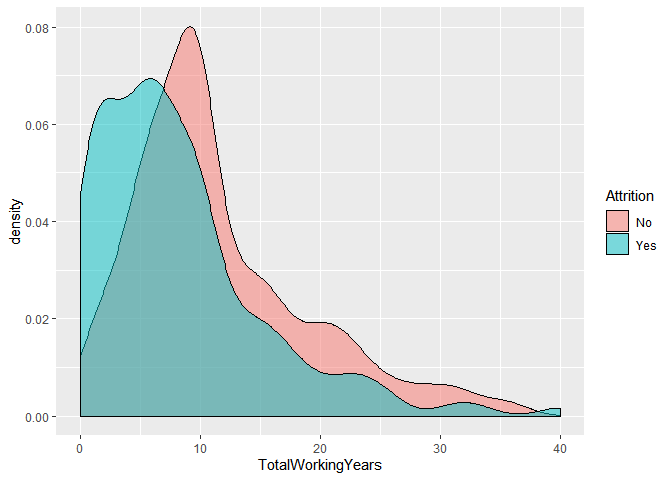
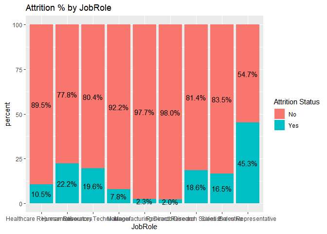
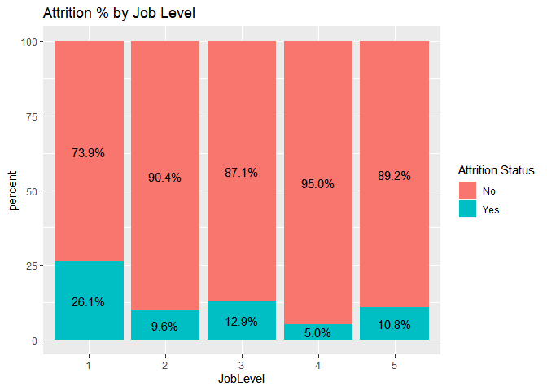

Define the Goals:
Using attrition Data Set, identify the top three factors that contribute to turnover/attrition. Also, explore job role specific trends that may exist in the data set (e.g., “Data Scientists have the highest job satisfaction”).
- build a model to predict attrition
build a model to predict salaries
Initial Meta Data and Data Profiling Analysis
Variables Analysis:
Examining the Attrition dataset, we note that it consists of 870 observations and 36 attributes/variables. The original variables consisted of 27 integers and 9 factors.
## Skim summary statistics
## n obs: 870
## n variables: 36
##
## -- Variable type:factor ----------------------------------------------------------------------------------------
## variable missing complete n n_unique
## Attrition 0 870 870 2
## BusinessTravel 0 870 870 3
## Department 0 870 870 3
## EducationField 0 870 870 6
## Gender 0 870 870 2
## JobRole 0 870 870 9
## MaritalStatus 0 870 870 3
## Over18 0 870 870 1
## OverTime 0 870 870 2
## top_counts ordered
## No: 730, Yes: 140, NA: 0 FALSE
## Tra: 618, Tra: 158, Non: 94, NA: 0 FALSE
## Res: 562, Sal: 273, Hum: 35, NA: 0 FALSE
## Lif: 358, Med: 270, Mar: 100, Tec: 75 FALSE
## Mal: 516, Fem: 354, NA: 0 FALSE
## Sal: 200, Res: 172, Lab: 153, Man: 87 FALSE
## Mar: 410, Sin: 269, Div: 191, NA: 0 FALSE
## Y: 870, NA: 0 FALSE
## No: 618, Yes: 252, NA: 0 FALSE
##
## -- Variable type:integer ---------------------------------------------------------------------------------------
## variable missing complete n mean sd p0
## Age 0 870 870 36.83 8.93 18
## DailyRate 0 870 870 815.23 401.12 103
## DistanceFromHome 0 870 870 9.34 8.14 1
## Education 0 870 870 2.9 1.02 1
## EmployeeCount 0 870 870 1 0 1
## EmployeeNumber 0 870 870 1029.83 604.79 1
## EnvironmentSatisfaction 0 870 870 2.7 1.1 1
## HourlyRate 0 870 870 65.61 20.13 30
## ID 0 870 870 435.5 251.29 1
## JobInvolvement 0 870 870 2.72 0.7 1
## JobLevel 0 870 870 2.04 1.09 1
## JobSatisfaction 0 870 870 2.71 1.11 1
## MonthlyIncome 0 870 870 6390.26 4597.7 1081
## MonthlyRate 0 870 870 14325.62 7108.38 2094
## NumCompaniesWorked 0 870 870 2.73 2.52 0
## PercentSalaryHike 0 870 870 15.2 3.68 11
## PerformanceRating 0 870 870 3.15 0.36 3
## RelationshipSatisfaction 0 870 870 2.71 1.1 1
## StandardHours 0 870 870 80 0 80
## StockOptionLevel 0 870 870 0.78 0.86 0
## TotalWorkingYears 0 870 870 11.05 7.51 0
## TrainingTimesLastYear 0 870 870 2.83 1.27 0
## WorkLifeBalance 0 870 870 2.78 0.71 1
## YearsAtCompany 0 870 870 6.96 6.02 0
## YearsInCurrentRole 0 870 870 4.2 3.64 0
## YearsSinceLastPromotion 0 870 870 2.17 3.19 0
## YearsWithCurrManager 0 870 870 4.14 3.57 0
## p25 p50 p75 p100 hist
## 30 35 43 60 <U+2581><U+2583><U+2586><U+2587><U+2585><U+2583><U+2582><U+2582>
## 472.5 817.5 1165.75 1499 <U+2586><U+2586><U+2587><U+2587><U+2587><U+2586><U+2587><U+2587>
## 2 7 14 29 <U+2587><U+2585><U+2583><U+2581><U+2581><U+2581><U+2581><U+2581>
## 2 3 4 5 <U+2582><U+2585><U+2581><U+2587><U+2581><U+2586><U+2581><U+2581>
## 1 1 1 1 <U+2581><U+2581><U+2581><U+2587><U+2581><U+2581><U+2581><U+2581>
## 477.25 1039 1561.5 2064 <U+2587><U+2587><U+2586><U+2587><U+2587><U+2587><U+2587><U+2587>
## 2 3 4 4 <U+2585><U+2581><U+2586><U+2581><U+2581><U+2587><U+2581><U+2587>
## 48 66 83 100 <U+2586><U+2587><U+2587><U+2587><U+2586><U+2587><U+2587><U+2587>
## 218.25 435.5 652.75 870 <U+2587><U+2587><U+2587><U+2587><U+2587><U+2587><U+2587><U+2587>
## 2 3 3 4 <U+2581><U+2581><U+2583><U+2581><U+2581><U+2587><U+2581><U+2581>
## 1 2 3 5 <U+2587><U+2587><U+2581><U+2583><U+2581><U+2582><U+2581><U+2581>
## 2 3 4 4 <U+2585><U+2581><U+2585><U+2581><U+2581><U+2587><U+2581><U+2587>
## 2839.5 4945.5 8182 19999 <U+2587><U+2587><U+2583><U+2582><U+2581><U+2581><U+2581><U+2581>
## 8092 14074.5 20456.25 26997 <U+2586><U+2587><U+2587><U+2587><U+2587><U+2586><U+2587><U+2586>
## 1 2 4 9 <U+2587><U+2582><U+2582><U+2582><U+2581><U+2581><U+2581><U+2581>
## 12 14 18 25 <U+2587><U+2587><U+2583><U+2583><U+2581><U+2582><U+2582><U+2581>
## 3 3 3 4 <U+2587><U+2581><U+2581><U+2581><U+2581><U+2581><U+2581><U+2582>
## 2 3 4 4 <U+2585><U+2581><U+2585><U+2581><U+2581><U+2587><U+2581><U+2587>
## 80 80 80 80 <U+2581><U+2581><U+2581><U+2587><U+2581><U+2581><U+2581><U+2581>
## 0 1 1 3 <U+2587><U+2581><U+2587><U+2581><U+2581><U+2582><U+2581><U+2581>
## 6 10 15 40 <U+2585><U+2587><U+2582><U+2582><U+2581><U+2581><U+2581><U+2581>
## 2 3 3 6 <U+2581><U+2581><U+2587><U+2587><U+2581><U+2582><U+2582><U+2581>
## 2 3 3 4 <U+2581><U+2581><U+2583><U+2581><U+2581><U+2587><U+2581><U+2582>
## 3 5 10 40 <U+2587><U+2585><U+2581><U+2581><U+2581><U+2581><U+2581><U+2581>
## 2 3 7 18 <U+2587><U+2582><U+2581><U+2585><U+2581><U+2581><U+2581><U+2581>
## 0 1 3 15 <U+2587><U+2582><U+2581><U+2581><U+2581><U+2581><U+2581><U+2581>
## 2 3 7 17 <U+2587><U+2582><U+2581><U+2583><U+2581><U+2581><U+2581><U+2581>Missing Values:
Analysis reveals that there are no missing values to be dealt with.
Data Profiling Analysis and Categorical imbalance
As illustrated in the charts below, some of the categorical variables appear to be imbalance. This may need to be dealt with prior to fitting the models.
Variable pruning
variables that have SD=0, or have one value for example over18=Yes, or provide similar information will be removed from the data set as they are not providing any analytical value. Additional pruning was done using correlation analysis. Heat map was produced to remove attributes that are highly correlated.
Correlated Attributes:
Identify correlated attributes using heat map and keep the one that has most influence on attrition

Determine which of the numerical (discreet and continuous) attributes are important to attrition
Age:
Age does not seem to have much impact on attrition where the average age of the employees that are is slightly lower than the average age of employees that are staying.
Years At Company:
The age observation closely tracks with the years at the company. This attribute also shows slight significance as it relates to attrition. The density chart shows employees tend to mostly leave within years 1-3
Years with current manager:
The number of years working with the same manager does not seem to have much impact on attrition.

Years in current role:
The variable does not seem to have much impact on attrition

Total Working Years:
This variable seems to have some impact on attrition as the density graph shows the density for the yes and no categories are slightly off indicating some influence.

Monthly Income:
This variable seems to have some impact on attrition as the density graph shows the density for the yes and no categories are slightly off indicating some influence. 
Years Since Last Promotion:
This variable does not seem to have some impact on attrition as the density graph shows the density for the yes and no categories are almost aligned indicating minimal Influence.

Distance from home:
This attribute appears to have an influence on attrition the density graph shows that people that have shorter commute have a higher probability of staying (not quitting)

Number Of Companies Worked:
Density chart for both attrition categories (Yes/No) is not much different based on the number of companies they’ve worked at. One exception is Employees who worked at one or two companies seem to have higher tendency to stay with the company.

Percent Salary Hike:
Density chart for both attrition categories (Yes/No) is not much different based on percentage salary hike they’ve received.

Performance Rating:
Density chart for both attrition categories (Yes/No) is not much different based on the performance rating. One exception is the employees the received a performance rating between 3.0 and 3.125 have tendency to stay with the company.

Education Level :
Density chart for both attrition categories (Yes/No) is not much different based on the Education Level. One exception is the employees the received a four years degree have tendency to stay with the company.

Relationship Satisfaction:
Density chart for both attrition categories (Yes/No) indicate that employee with higher relationship satisfaction, 3 and 4, tend to stay with the company.
Relationship Satisfaction:
Density chart for both attrition categories (Yes/No) indicate that employee with stock option levels of 1 and 2 have a much higher retention rate and tend to stay with the company.

Work Life Balance:
Density chart for both attrition categories (Yes/No) for Work Life Balance is quite similar with the exception for level 3 have a higher retention rate and tend to stay with the company.
Job Level:
Density chart for both attrition categories (Yes/No) for Job Level is quite different especially for levels 1, 2 and 4.

Environment Satisfaction:
Density chart for both attrition categories (Yes/No) for Environment Satisfaction is quite different especially for levels 2, 3 and 4. The more satisfaction the higher the retention.
Job Involvement:
Density chart for both attrition categories (Yes/No) for Job Involvement is somewhat similar the exception is for Job Involvement level 4, those employees have a much higher retention.
Job Satisfaction:
Density chart for both attrition categories (Yes/No) for Job satisfaction is very similar the exception is for Job satisfaction levels 3 and 4 those employees have a higher retention.
Number of Training classes:
Density chart for both attrition categories (Yes/No) for Job Involvement is somewhat similar the exception is for employees who to 3 classes, those employees have a much higher retention.
Categorical Analysis
Attrition by Dept:
Attrition level for the various dept is consistent and thus does not appear to be relevant to attrition

Attrition By Education Field:
Attrition across the various education level is consistent and thus does not appear to be relevant to attrition
Attrition By Gender:
Attrition for both is consistent and thus does not appear to be relevant to attrition
Attrition By Job Role:
This variable appears to play a significant role in attrition whereby the Sales Representative have a high attrition rate of 45.3% nearly twice as high the next job role of Human resources which has a rate of 22.2%.

Attrition By Marital Status:
This variable appears to play a significant role in attrition whereby the singles have a high attrition rate of 26.0% nearly twice as high the married which has a rate of 14.1%.

Attrition By Over Time Status:
This variable appears to play a significant role in attrition whereby over time employees have a high attrition rate of 31.7% are three times as likely to be attrition as non-overtime employees at 9.7%.
Attrition By Stock Option Level:
This variable appears to play a significant role in attrition whereby employees receiving no stock options (level 0) and those who receive the highest option (level = 3) have a high attrition rate the is almost three times that of employees the receive stock options at level 1 and 2.
Attrition By Work Life Balance:
The majority of work-life balance categories have similar attrition rates.
Attrition By Job Level:
This variable appears to play a significant role in attrition whereby the various job levels have drastically different attrition rates.

Attrition By Environment Satisfaction:
The attrition rate is mostly consistent across the various levels
Attrition By Job Involvement:
This variable appears to play a significant role in attrition whereby employees receiving low job involvement (level 1) are 4 times as likely to be attrition (46.9%) as those in the next level of job involvement whose attrition rate is (19.3%)
Attrition by Job Satisfaction:
This variable does not seem to have minimal influence on attrition.
Attrition by Training Times Last Year:
This variable appears to play a significant role in attrition whereby employees receiving different levels of training have different attrition rates.
Classify using the KNN:
I tried using Under sample, Over Sample and both none of the balanced training data produced the desired effect, to I decided to use the original data set. Using the analysis of the categorical and continuous variables conducted above, the following variables were selected to fit a KNN Model: StockOptionLevel, DistanceFromHome, MonthlyIncome, JobInvolvement. Through multiple iteration of K, Seed optimization, and different train/test split ratios the following parameters were the most optimal: K= 7, Split = 85%, and Seed = 100. With these parameters, the model was fitted and trained and the below are the outcomes: prediction Accuracy = 86.1%, Specificity = 75% Sensitivity = 86.5%
## Confusion Matrix and Statistics
##
## classifications
## No Yes
## No 109 1
## Yes 17 3
##
## Accuracy : 0.8615
## 95% CI : (0.79, 0.9158)
## No Information Rate : 0.9692
## P-Value [Acc > NIR] : 1.000000
##
## Kappa : 0.2095
##
## Mcnemar's Test P-Value : 0.000407
##
## Sensitivity : 0.8651
## Specificity : 0.7500
## Pos Pred Value : 0.9909
## Neg Pred Value : 0.1500
## Prevalence : 0.9692
## Detection Rate : 0.8385
## Detection Prevalence : 0.8462
## Balanced Accuracy : 0.8075
##
## 'Positive' Class : No
## ### Predict the Attrition from File
Naive-Bayes Model:
This model produced similar results as the KNN model but the accuracy was lower, 82% versus 86% and the specificity came out to be 0. As a result, I decided to use the KNN model.
## Confusion Matrix and Statistics
##
##
## No Yes
## No 107 3
## Yes 20 0
##
## Accuracy : 0.8231
## 95% CI : (0.7465, 0.8844)
## No Information Rate : 0.9769
## P-Value [Acc > NIR] : 1.0000000
##
## Kappa : -0.0418
##
## Mcnemar's Test P-Value : 0.0008492
##
## Sensitivity : 0.8425
## Specificity : 0.0000
## Pos Pred Value : 0.9727
## Neg Pred Value : 0.0000
## Prevalence : 0.9769
## Detection Rate : 0.8231
## Detection Prevalence : 0.8462
## Balanced Accuracy : 0.4213
##
## 'Positive' Class : No
## Linear Regression
Validate assumptions:
The GGPLOTS and point plots confirm the assumptions. There is no evidence against normal distributions. There does not seem to be much evidence against a linear relationship between the means and there does not seem to be much evidence of non-constant standard deviation of the normal distributions.
##
## Attaching package: 'Metrics'## The following objects are masked from 'package:caret':
##
## precision, recall
Fit the Linear Regression Model using significant variables identified above. Specifically:
- Years At company
- Total Working Years
- Job Level
## [1] 1379.319##
## Call:
## lm(formula = MonthlyIncome ~ YearsAtCompany + TotalWorkingYears +
## JobLevel, data = NumMainAttrDF)
##
## Residuals:
## Min 1Q Median 3Q Max
## -5625.1 -888.5 42.3 725.5 3968.3
##
## Coefficients:
## Estimate Std. Error t value Pr(>|t|)
## (Intercept) -1764.37 100.04 -17.637 < 2e-16 ***
## YearsAtCompany -32.04 10.11 -3.170 0.00158 **
## TotalWorkingYears 70.76 11.07 6.394 2.64e-10 ***
## JobLevel 3724.98 68.94 54.035 < 2e-16 ***
## ---
## Signif. codes: 0 '***' 0.001 '**' 0.01 '*' 0.05 '.' 0.1 ' ' 1
##
## Residual standard error: 1383 on 866 degrees of freedom
## Multiple R-squared: 0.9099, Adjusted R-squared: 0.9096
## F-statistic: 2915 on 3 and 866 DF, p-value: < 2.2e-16## 2.5 % 97.5 %
## (Intercept) -1960.72215 -1568.02112
## YearsAtCompany -51.87443 -12.20068
## TotalWorkingYears 49.04284 92.48534
## JobLevel 3589.67851 3860.28464